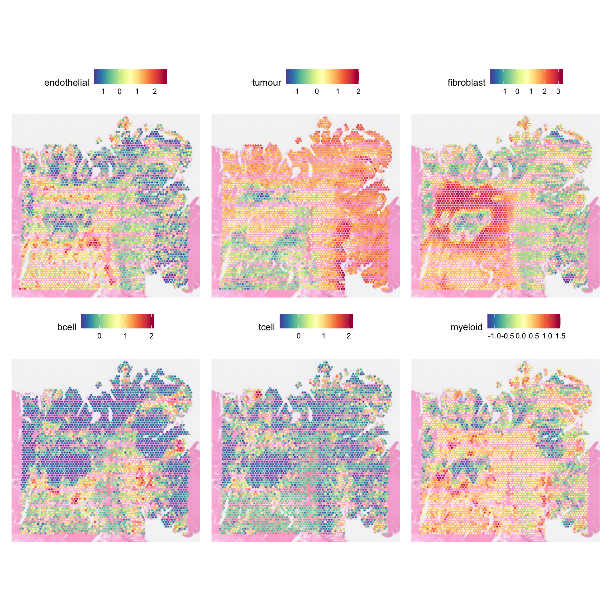
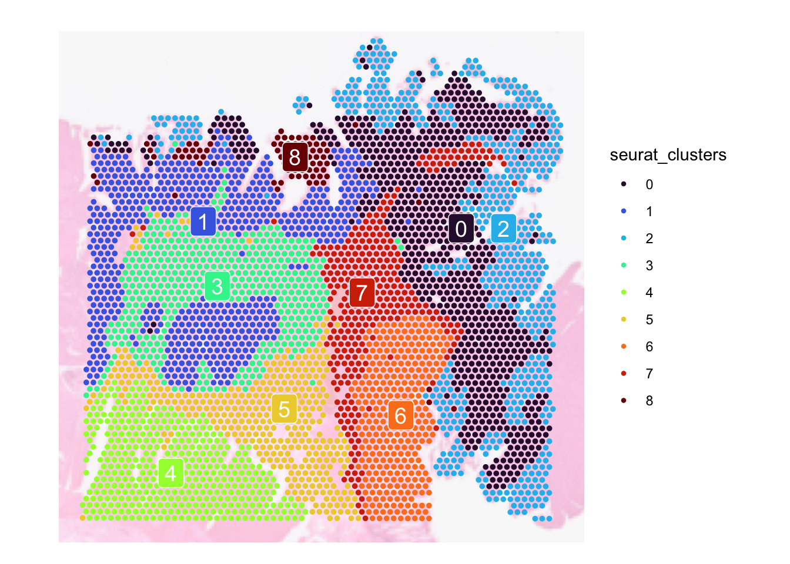
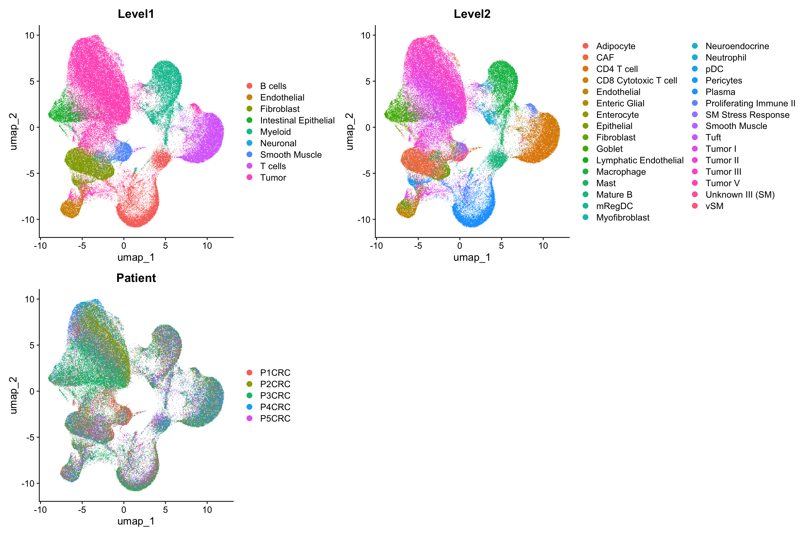
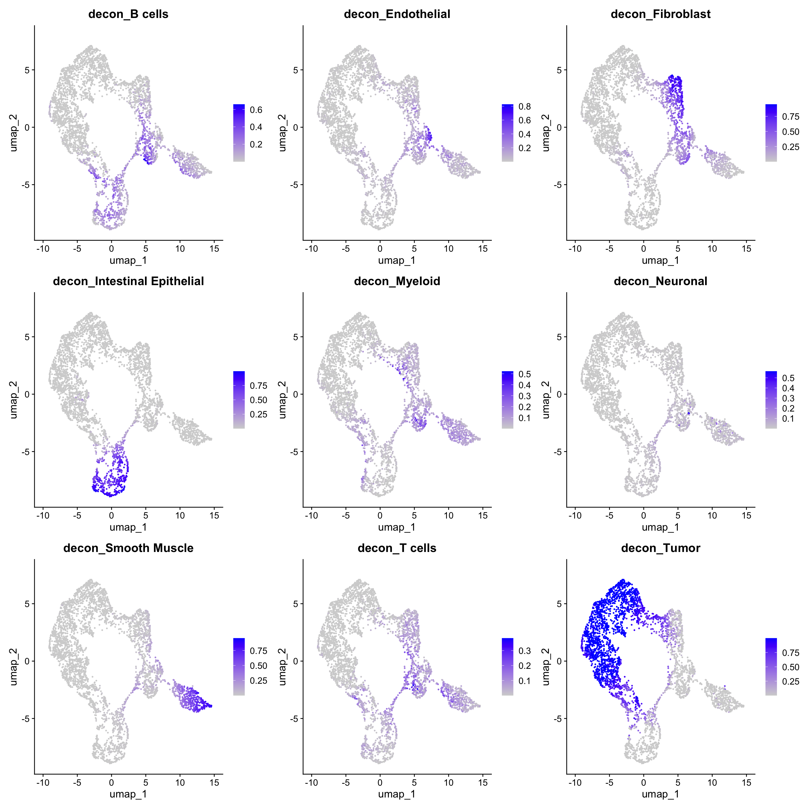
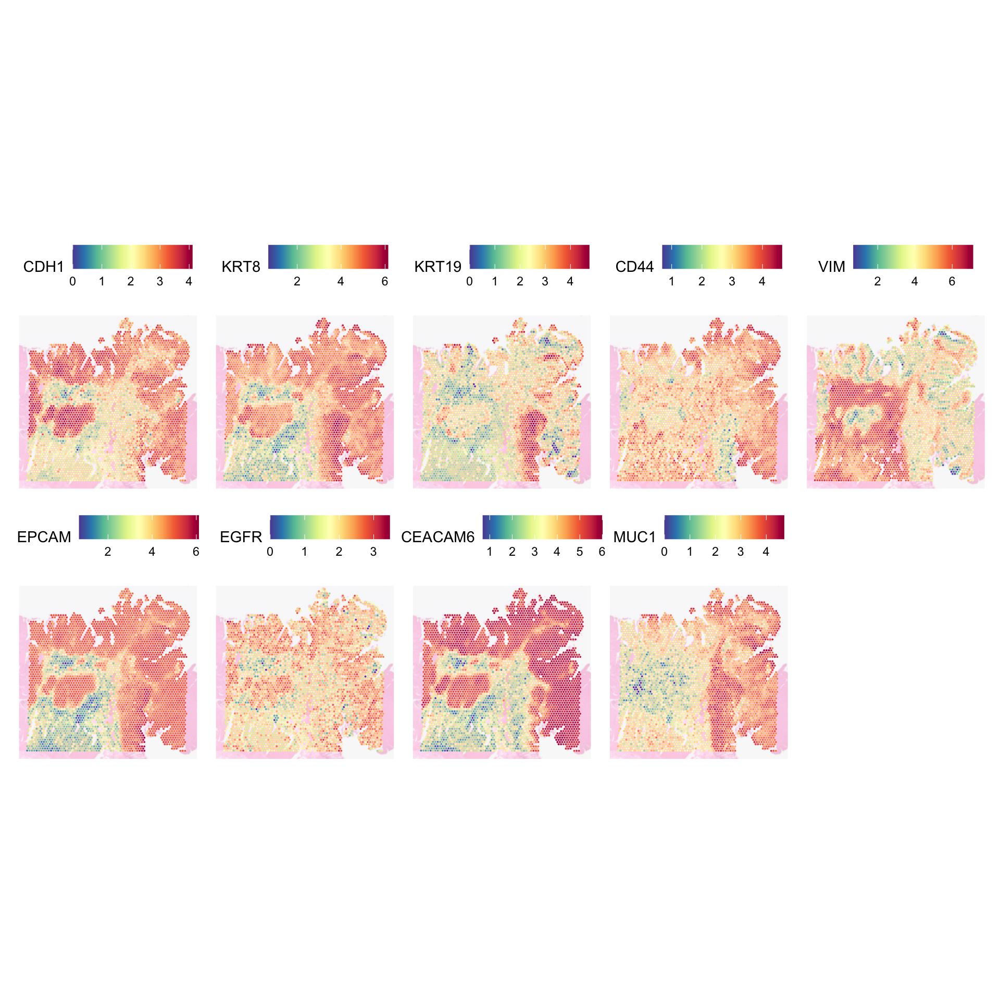
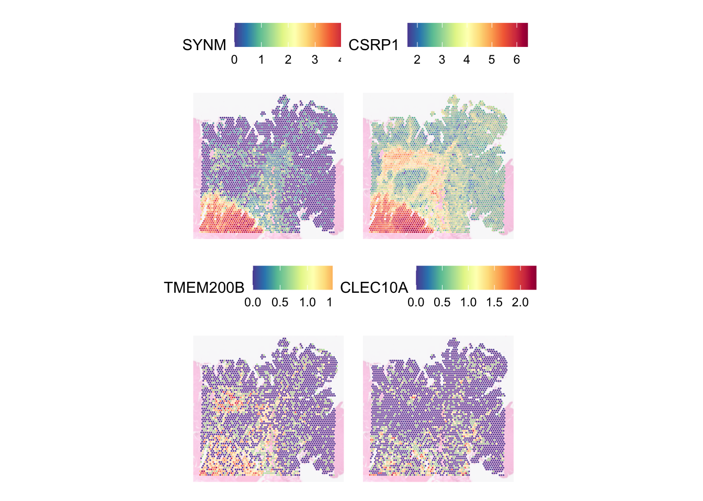
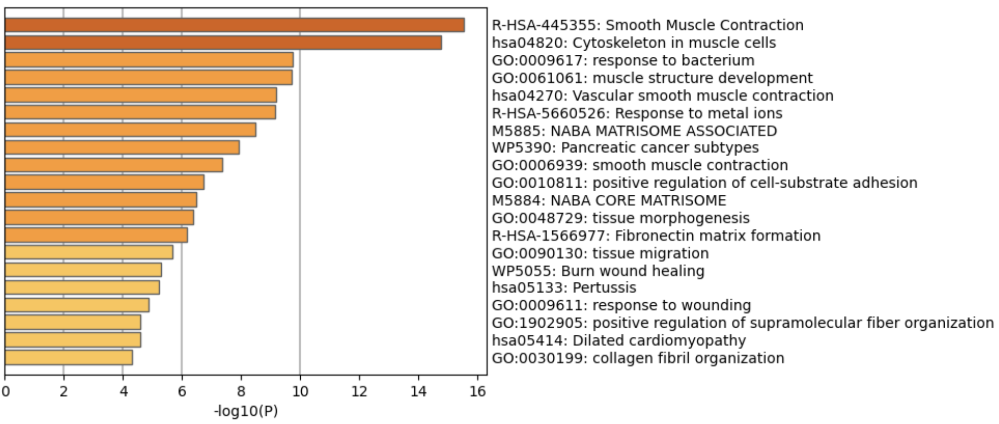

Visium Part 4
Givanna Putri, Thomas O’neil
Last updated: 2024-11-21
Checks: 7 0
Knit directory: asi_spatial_workshop_2024/
This reproducible R Markdown analysis was created with workflowr (version 1.7.1). The Checks tab describes the reproducibility checks that were applied when the results were created. The Past versions tab lists the development history.
Great! Since the R Markdown file has been committed to the Git repository, you know the exact version of the code that produced these results.
Great job! The global environment was empty. Objects defined in the global environment can affect the analysis in your R Markdown file in unknown ways. For reproduciblity it’s best to always run the code in an empty environment.
The command set.seed(20240925) was run prior to running
the code in the R Markdown file. Setting a seed ensures that any results
that rely on randomness, e.g. subsampling or permutations, are
reproducible.
Great job! Recording the operating system, R version, and package versions is critical for reproducibility.
Nice! There were no cached chunks for this analysis, so you can be confident that you successfully produced the results during this run.
Great job! Using relative paths to the files within your workflowr project makes it easier to run your code on other machines.
Great! You are using Git for version control. Tracking code development and connecting the code version to the results is critical for reproducibility.
The results in this page were generated with repository version be1f1f7. See the Past versions tab to see a history of the changes made to the R Markdown and HTML files.
Note that you need to be careful to ensure that all relevant files for
the analysis have been committed to Git prior to generating the results
(you can use wflow_publish or
wflow_git_commit). workflowr only checks the R Markdown
file, but you know if there are other scripts or data files that it
depends on. Below is the status of the Git repository when the results
were generated:
Ignored files:
Ignored: .DS_Store
Ignored: .Rhistory
Ignored: .Rproj.user/
Ignored: analysis/.DS_Store
Ignored: data/.DS_Store
Ignored: data/single_cell/
Ignored: data/visium/
Ignored: output/visium/
Untracked files:
Untracked: code/visium_03.R
Untracked: code/visium_04.R
Untracked: visium/
Note that any generated files, e.g. HTML, png, CSS, etc., are not included in this status report because it is ok for generated content to have uncommitted changes.
These are the previous versions of the repository in which changes were
made to the R Markdown (analysis/visium_04.Rmd) and HTML
(docs/visium_04.html) files. If you’ve configured a remote
Git repository (see ?wflow_git_remote), click on the
hyperlinks in the table below to view the files as they were in that
past version.
| File | Version | Author | Date | Message |
|---|---|---|---|---|
| Rmd | be1f1f7 | Givanna Putri | 2024-11-21 | wflow_publish("analysis/visium_04.Rmd") |
| Rmd | 9d57766 | Givanna Putri | 2024-11-21 | add part 4 |
| html | 9d57766 | Givanna Putri | 2024-11-21 | add part 4 |
Introduction
In this part of the workshop, we will learn how to use module scoring, clustering, and deconvolution to resolve the cell types in each spot. From there, we will then explore what interesting biology visium data can offer, including finding spatially variable genes.
Load packages and data
library(Seurat)
library(qs)
library(ggplot2)
library(scales)
library(spacexr)We will be using the Seurat object that we have QCed and normalised in part 2.
dat <- qread("visium/data/visium_seurat_qced_norm.qs")
datAn object of class Seurat
35982 features across 3959 samples within 2 assays
Active assay: SCT (17991 features, 3000 variable features)
3 layers present: counts, data, scale.data
1 other assay present: Spatial
1 spatial field of view present: slice1Module scoring
Module scoring is a simple yet powerful way of inferring what cell types are likely to be present in which spot based on a set of signatures/marker genes (a module). It uses predefined sets of signature or marker genes (modules) to calculate scores that reflect the expression levels of these genes across different spots.
It is particularly useful when you have predefined cell types and their corresponding marker genes, allowing you to assess the presence or absence of these cell types in your data. Module scoring can be advantageous when you have the signatures of the cell types that are of interest, or if you have previously analysed data from different omics (e.g., bulk RNA seq) and derived a set of signatures you want to focus on.
# for finding genes
# Features(dat_fil)[grep("S100B.*", Features(dat_fil))]
genes_to_score <- list(
endothelial = c("PLVAP", "VWF", "PECAM1", "ERG"),
tumour = c("EPCAM", "EGFR", "CEACAM6", "MUC1"),
fibroblast = c("COL1A1", "COL1A2", "VIM", "FAP", "PDGFRA", "THY1", "S100A4"),
bcell = c("PTPRC", "MS4A1", "CD79A", "MZB1"),
tcell = c("PTPRC", "CD3D", "CD3E", "CD3G"),
myeloid = c("PTPRC", "ITGAX", "ITGAM", "CD14", "LYZ", "LILRA4", "IRF7")
)
dat <- AddModuleScore(
object = dat, features = genes_to_score,
seed = 42
)
head(dat[[]]) orig.ident nCount_Spatial nFeature_Spatial patient_id
AACAATGTGCTCCGAG-1 SeuratProject 159478 12671 P2
AACACCATTCGCATAC-1 SeuratProject 5719 3393 P2
AACACGACAACGGAGT-1 SeuratProject 244734 13369 P2
AACACGCAGATAACAA-1 SeuratProject 12387 6003 P2
AACACTCGTGAGCTTC-1 SeuratProject 55548 10947 P2
AACAGCCTCCTGACTA-1 SeuratProject 270289 13723 P2
remove_spot_from_loupe percent_mt nCount_SCT nFeature_SCT
AACAATGTGCTCCGAG-1 FALSE 3.507023 78899 11013
AACACCATTCGCATAC-1 FALSE 2.080783 71715 12165
AACACGACAACGGAGT-1 FALSE 3.377939 78551 10577
AACACGCAGATAACAA-1 FALSE 2.882054 71631 12235
AACACTCGTGAGCTTC-1 FALSE 2.385324 76821 10931
AACAGCCTCCTGACTA-1 FALSE 3.331212 79104 10992
Cluster1 Cluster2 Cluster3 Cluster4 Cluster5
AACAATGTGCTCCGAG-1 -0.48331890 0.78324471 -0.8296040 -0.52937960 -0.35567254
AACACCATTCGCATAC-1 0.41389772 -0.04350017 1.5741999 -0.05605231 0.11432363
AACACGACAACGGAGT-1 0.22576106 1.09322111 -0.1339130 -0.30391066 -0.35184381
AACACGCAGATAACAA-1 1.21610364 -0.16191345 1.8153155 -0.23086647 -0.08703452
AACACTCGTGAGCTTC-1 -0.03386751 0.45520543 1.6151196 -0.06641174 0.37234615
AACAGCCTCCTGACTA-1 0.36436415 1.03264208 0.1069596 -0.17954790 -0.38298954
Cluster6
AACAATGTGCTCCGAG-1 -0.913391613
AACACCATTCGCATAC-1 0.179063881
AACACGACAACGGAGT-1 -0.377623635
AACACGCAGATAACAA-1 0.504274609
AACACTCGTGAGCTTC-1 -0.114673812
AACAGCCTCCTGACTA-1 0.007111593For a given module, a score is computed as the average expression of genes in the module, adjusted by the aggregated expression of a control set of genes (defaults to all genes in the data). A positive score would suggest that this module of genes is expressed in a particular spot more highly than would be expected (given the average expression of this module across the population). Importantly, the scores are not absolute scores, meaning you should not compare them across different experiments.
However, it is important to note that the score produces only represent the relative enrichment of a set of genes in a spot, and that it represents neither the proportion nor the absolute count of a cell type therein. The score only provides the probability for a given cell type to be present in a spot.
In the example above, we have 6 modules defined in the
genes_to_score list. By default, Seurat will store the
scores as new columns in the spot metadata, named Cluster1, Cluster2, …,
Cluster6. Each column corresponds to 1 module. Cluster1 denotes score
for endothelial cells, Cluster2 for tumour cells, etc. For ease of
subsequent interpretation, we should rename these.
dat[[names(genes_to_score)]] <- dat[[paste0("Cluster", seq(6))]]
head(dat[[]]) orig.ident nCount_Spatial nFeature_Spatial patient_id
AACAATGTGCTCCGAG-1 SeuratProject 159478 12671 P2
AACACCATTCGCATAC-1 SeuratProject 5719 3393 P2
AACACGACAACGGAGT-1 SeuratProject 244734 13369 P2
AACACGCAGATAACAA-1 SeuratProject 12387 6003 P2
AACACTCGTGAGCTTC-1 SeuratProject 55548 10947 P2
AACAGCCTCCTGACTA-1 SeuratProject 270289 13723 P2
remove_spot_from_loupe percent_mt nCount_SCT nFeature_SCT
AACAATGTGCTCCGAG-1 FALSE 3.507023 78899 11013
AACACCATTCGCATAC-1 FALSE 2.080783 71715 12165
AACACGACAACGGAGT-1 FALSE 3.377939 78551 10577
AACACGCAGATAACAA-1 FALSE 2.882054 71631 12235
AACACTCGTGAGCTTC-1 FALSE 2.385324 76821 10931
AACAGCCTCCTGACTA-1 FALSE 3.331212 79104 10992
Cluster1 Cluster2 Cluster3 Cluster4 Cluster5
AACAATGTGCTCCGAG-1 -0.48331890 0.78324471 -0.8296040 -0.52937960 -0.35567254
AACACCATTCGCATAC-1 0.41389772 -0.04350017 1.5741999 -0.05605231 0.11432363
AACACGACAACGGAGT-1 0.22576106 1.09322111 -0.1339130 -0.30391066 -0.35184381
AACACGCAGATAACAA-1 1.21610364 -0.16191345 1.8153155 -0.23086647 -0.08703452
AACACTCGTGAGCTTC-1 -0.03386751 0.45520543 1.6151196 -0.06641174 0.37234615
AACAGCCTCCTGACTA-1 0.36436415 1.03264208 0.1069596 -0.17954790 -0.38298954
Cluster6 endothelial tumour fibroblast bcell
AACAATGTGCTCCGAG-1 -0.913391613 -0.48331890 0.78324471 -0.8296040 -0.52937960
AACACCATTCGCATAC-1 0.179063881 0.41389772 -0.04350017 1.5741999 -0.05605231
AACACGACAACGGAGT-1 -0.377623635 0.22576106 1.09322111 -0.1339130 -0.30391066
AACACGCAGATAACAA-1 0.504274609 1.21610364 -0.16191345 1.8153155 -0.23086647
AACACTCGTGAGCTTC-1 -0.114673812 -0.03386751 0.45520543 1.6151196 -0.06641174
AACAGCCTCCTGACTA-1 0.007111593 0.36436415 1.03264208 0.1069596 -0.17954790
tcell myeloid
AACAATGTGCTCCGAG-1 -0.35567254 -0.913391613
AACACCATTCGCATAC-1 0.11432363 0.179063881
AACACGACAACGGAGT-1 -0.35184381 -0.377623635
AACACGCAGATAACAA-1 -0.08703452 0.504274609
AACACTCGTGAGCTTC-1 0.37234615 -0.114673812
AACAGCCTCCTGACTA-1 -0.38298954 0.007111593We can visualise the scores using SpatialFeaturePlot:
SpatialFeaturePlot(
dat,
features = names(genes_to_score),
pt.size.factor = 5,
image.alpha = 0.5
)
| Version | Author | Date |
|---|---|---|
| 9d57766 | Givanna Putri | 2024-11-21 |
Cluster spots
We can also cluster the spots based on their gene expressions. This is especially handy if you are unsure what cell types you want to find.
dat <- RunPCA(dat, assay = "SCT", verbose = FALSE)
dat <- FindNeighbors(dat, reduction = "pca", dims = 1:10, verbose = FALSE)
# increase resolution to find more clusters
dat <- FindClusters(dat, verbose = FALSE, resolution = 0.5, random.seed = 42)
SpatialDimPlot(
dat,
group.by = "seurat_clusters",
label = TRUE,
pt.size.factor = 5,
image.alpha = 0.3,
label.size = 5
) + scale_fill_viridis_d(option = "turbo")Scale for fill is already present.
Adding another scale for fill, which will replace the existing scale.
Scale for fill is already present.
Adding another scale for fill, which will replace the existing scale.
| Version | Author | Date |
|---|---|---|
| 9d57766 | Givanna Putri | 2024-11-21 |
Since visium is a spot based technology, a spot can contain multiple cell types that are commonly grouped into different clusters. Thus grouping spots into clusters are not ideal as within a cluster, you may get an assortment of cell types rather than just one. But, this is better than nothing.
Cell type deconvolution
Cell type deconvolution is very commonly used for analysing visium data to infer the cell types that are present in a spot and their proportions. It uses an annotated scRNAseq data as a reference to do this. Importantly, for this to work as intended, it is important to make sure that both the visium data and the scRNAseq data are of the same biology (they do not need to be from the same sample).
For this workshop, we will use the RCTD deconvolution algorithm provided by the spacexr package. For the reference scRNAseq data, we will use one of the scRNAseq data that accompanies the visium data.
sc_data <- qread("visium/data/sc_seurat_object_10x.qs")
DimPlot(sc_data, reduction = "umap", group.by = c("Level1", "Level2", "Patient"), ncol=2)Rasterizing points since number of points exceeds 100,000.
To disable this behavior set `raster=FALSE`
Rasterizing points since number of points exceeds 100,000.
To disable this behavior set `raster=FALSE`
Rasterizing points since number of points exceeds 100,000.
To disable this behavior set `raster=FALSE`
Prepare the data - note that: RCTD requires raw counts.
# Prepare the single cell data
sc_counts <- sc_data[['RNA']]$counts
lbls <- as.factor(sc_data$Level1)
nUMI <- sc_data$nCount_originalexp
ref_sc <- Reference(
counts = sc_counts,
cell_types = lbls,
nUMI = nUMI
)Warning in Reference(counts = sc_counts, cell_types = lbls, nUMI = nUMI):
Reference: nUMI does not match colSums of counts. If this is unintended, please
correct this discrepancy. If this is intended, there is no problem.Warning in Reference(counts = sc_counts, cell_types = lbls, nUMI = nUMI):
Reference: number of cells per cell type is 64750, larger than maximum
allowable of 10000. Downsampling number of cells to: 10000# Prepare the visium data
spat_counts <- dat[['Spatial']]$counts
spat_nUMI <- colSums(spat_counts)
# Note GetTissueCoordinates is needed because RCTD wants the x,y coordinates of the spots
spot_coords <- GetTissueCoordinates(dat)[, 1:2]
query_spat <- SpatialRNA(
coords = spot_coords,
counts = spat_counts,
nUMI = spat_nUMI
)Run RCTD - this can take some time!:
# set max_cores to a reasonable number, don't overdo it!
RCTD <- create.RCTD(
spatialRNA = query_spat,
reference = ref_sc,
max_cores = 13
)Begin: process_cell_type_infoprocess_cell_type_info: number of cells in reference: 66066process_cell_type_info: number of genes in reference: 18076
B cells Endothelial Fibroblast
10000 4872 10000
Intestinal Epithelial Myeloid Neuronal
6618 10000 555
Smooth Muscle T cells Tumor
4021 10000 10000 Warning in asMethod(object): sparse->dense coercion: allocating vector of size
1.3 GiB
Warning in asMethod(object): sparse->dense coercion: allocating vector of size
1.3 GiB
Warning in asMethod(object): sparse->dense coercion: allocating vector of size
1.3 GiB
Warning in asMethod(object): sparse->dense coercion: allocating vector of size
1.3 GiB
Warning in asMethod(object): sparse->dense coercion: allocating vector of size
1.3 GiBEnd: process_cell_type_infocreate.RCTD: getting regression differentially expressed genes: get_de_genes: B cells found DE genes: 112get_de_genes: Endothelial found DE genes: 344get_de_genes: Fibroblast found DE genes: 234get_de_genes: Intestinal Epithelial found DE genes: 303get_de_genes: Myeloid found DE genes: 363get_de_genes: Neuronal found DE genes: 250get_de_genes: Smooth Muscle found DE genes: 268get_de_genes: T cells found DE genes: 495get_de_genes: Tumor found DE genes: 239get_de_genes: total DE genes: 2197create.RCTD: getting platform effect normalization differentially expressed genes: get_de_genes: B cells found DE genes: 242get_de_genes: Endothelial found DE genes: 658get_de_genes: Fibroblast found DE genes: 433get_de_genes: Intestinal Epithelial found DE genes: 659get_de_genes: Myeloid found DE genes: 698get_de_genes: Neuronal found DE genes: 564get_de_genes: Smooth Muscle found DE genes: 540get_de_genes: T cells found DE genes: 1104get_de_genes: Tumor found DE genes: 686get_de_genes: total DE genes: 4192# Note, full_mode option is reasonable for visium as we don't really want to restrict the
# number of cell types per spot.
# ‘doublet mode’ (at most 1-2 cell types per pixel),
# ‘full mode’ (no restrictions on number of cell types), or
# ‘multi mode’ (finitely many cell types per pixel, e.g. 3 or 4).
RCTD <- run.RCTD(RCTD, doublet_mode = "full")fitBulk: decomposing bulkchooseSigma: using initial Q_mat with sigma = 1Likelihood value: 5698360.60189028Sigma value: 0.84Likelihood value: 5572962.87820692Sigma value: 0.69Likelihood value: 5466742.53636326Sigma value: 0.61Likelihood value: 5419463.53769131Sigma value: 0.53Likelihood value: 5383250.49200043Sigma value: 0.45Likelihood value: 5363627.31719367Sigma value: 0.43Likelihood value: 5362189.3396684Sigma value: 0.42Likelihood value: 5362096.60139005Sigma value: 0.42# qsave the object
qsave(RCTD, "visium/data/rctd_decon_out.qs")Results of RCTD are stored in @results. There are lots
of information in there. Let’s focus on the weights which
gives estimated proportions of each cell type in each spot. It needs to
be normalised so they sum up to 1.
norm_weights <- normalize_weights(RCTD@results$weights)
head(norm_weights)6 x 9 Matrix of class "dgeMatrix"
B cells Endothelial Fibroblast Intestinal Epithelial
AACAATGTGCTCCGAG-1 7.899614e-05 7.899614e-05 7.899568e-05 7.899614e-05
AACACCATTCGCATAC-1 8.889903e-02 4.923931e-02 3.953438e-01 2.440127e-03
AACACGACAACGGAGT-1 7.026386e-05 4.284991e-04 7.026386e-05 1.418038e-04
AACACGCAGATAACAA-1 2.112769e-04 3.151278e-01 3.357267e-01 4.432017e-03
AACACTCGTGAGCTTC-1 9.755169e-05 6.672631e-03 2.993323e-01 9.755169e-05
AACAGCCTCCTGACTA-1 4.880865e-05 2.108676e-02 4.880867e-05 5.332305e-05
Myeloid Neuronal Smooth Muscle T cells
AACAATGTGCTCCGAG-1 7.899614e-05 0.001823021 7.899614e-05 7.899614e-05
AACACCATTCGCATAC-1 2.710983e-01 0.019871147 3.770017e-02 1.114449e-01
AACACGACAACGGAGT-1 7.026386e-05 0.000172045 7.026386e-05 7.026386e-05
AACACGCAGATAACAA-1 1.100200e-01 0.073684066 1.255556e-01 3.503120e-02
AACACTCGTGAGCTTC-1 3.939506e-03 0.010046186 3.475492e-02 7.216675e-02
AACAGCCTCCTGACTA-1 1.243392e-02 0.002546567 4.880865e-05 4.880865e-05
Tumor
AACAATGTGCTCCGAG-1 0.9976240064
AACACCATTCGCATAC-1 0.0239632188
AACACGACAACGGAGT-1 0.9989063327
AACACGCAGATAACAA-1 0.0002112769
AACACTCGTGAGCTTC-1 0.5728926037
AACAGCCTCCTGACTA-1 0.9636841943We can then attach it to our Seurat object and plot it.
colnames(norm_weights) <- paste0("decon_", colnames(norm_weights))
dat <- AddMetaData(dat, metadata = norm_weights)
head(dat[[]]) orig.ident nCount_Spatial nFeature_Spatial patient_id
AACAATGTGCTCCGAG-1 SeuratProject 159478 12671 P2
AACACCATTCGCATAC-1 SeuratProject 5719 3393 P2
AACACGACAACGGAGT-1 SeuratProject 244734 13369 P2
AACACGCAGATAACAA-1 SeuratProject 12387 6003 P2
AACACTCGTGAGCTTC-1 SeuratProject 55548 10947 P2
AACAGCCTCCTGACTA-1 SeuratProject 270289 13723 P2
remove_spot_from_loupe percent_mt nCount_SCT nFeature_SCT
AACAATGTGCTCCGAG-1 FALSE 3.507023 78899 11013
AACACCATTCGCATAC-1 FALSE 2.080783 71715 12165
AACACGACAACGGAGT-1 FALSE 3.377939 78551 10577
AACACGCAGATAACAA-1 FALSE 2.882054 71631 12235
AACACTCGTGAGCTTC-1 FALSE 2.385324 76821 10931
AACAGCCTCCTGACTA-1 FALSE 3.331212 79104 10992
Cluster1 Cluster2 Cluster3 Cluster4 Cluster5
AACAATGTGCTCCGAG-1 -0.48331890 0.78324471 -0.8296040 -0.52937960 -0.35567254
AACACCATTCGCATAC-1 0.41389772 -0.04350017 1.5741999 -0.05605231 0.11432363
AACACGACAACGGAGT-1 0.22576106 1.09322111 -0.1339130 -0.30391066 -0.35184381
AACACGCAGATAACAA-1 1.21610364 -0.16191345 1.8153155 -0.23086647 -0.08703452
AACACTCGTGAGCTTC-1 -0.03386751 0.45520543 1.6151196 -0.06641174 0.37234615
AACAGCCTCCTGACTA-1 0.36436415 1.03264208 0.1069596 -0.17954790 -0.38298954
Cluster6 endothelial tumour fibroblast bcell
AACAATGTGCTCCGAG-1 -0.913391613 -0.48331890 0.78324471 -0.8296040 -0.52937960
AACACCATTCGCATAC-1 0.179063881 0.41389772 -0.04350017 1.5741999 -0.05605231
AACACGACAACGGAGT-1 -0.377623635 0.22576106 1.09322111 -0.1339130 -0.30391066
AACACGCAGATAACAA-1 0.504274609 1.21610364 -0.16191345 1.8153155 -0.23086647
AACACTCGTGAGCTTC-1 -0.114673812 -0.03386751 0.45520543 1.6151196 -0.06641174
AACAGCCTCCTGACTA-1 0.007111593 0.36436415 1.03264208 0.1069596 -0.17954790
tcell myeloid SCT_snn_res.0.5 seurat_clusters
AACAATGTGCTCCGAG-1 -0.35567254 -0.913391613 0 0
AACACCATTCGCATAC-1 0.11432363 0.179063881 5 5
AACACGACAACGGAGT-1 -0.35184381 -0.377623635 0 0
AACACGCAGATAACAA-1 -0.08703452 0.504274609 5 5
AACACTCGTGAGCTTC-1 0.37234615 -0.114673812 3 3
AACAGCCTCCTGACTA-1 -0.38298954 0.007111593 0 0
decon_B cells decon_Endothelial decon_Fibroblast
AACAATGTGCTCCGAG-1 7.899614e-05 7.899614e-05 7.899568e-05
AACACCATTCGCATAC-1 8.889903e-02 4.923931e-02 3.953438e-01
AACACGACAACGGAGT-1 7.026386e-05 4.284991e-04 7.026386e-05
AACACGCAGATAACAA-1 2.112769e-04 3.151278e-01 3.357267e-01
AACACTCGTGAGCTTC-1 9.755169e-05 6.672631e-03 2.993323e-01
AACAGCCTCCTGACTA-1 4.880865e-05 2.108676e-02 4.880867e-05
decon_Intestinal Epithelial decon_Myeloid decon_Neuronal
AACAATGTGCTCCGAG-1 7.899614e-05 7.899614e-05 0.001823021
AACACCATTCGCATAC-1 2.440127e-03 2.710983e-01 0.019871147
AACACGACAACGGAGT-1 1.418038e-04 7.026386e-05 0.000172045
AACACGCAGATAACAA-1 4.432017e-03 1.100200e-01 0.073684066
AACACTCGTGAGCTTC-1 9.755169e-05 3.939506e-03 0.010046186
AACAGCCTCCTGACTA-1 5.332305e-05 1.243392e-02 0.002546567
decon_Smooth Muscle decon_T cells decon_Tumor
AACAATGTGCTCCGAG-1 7.899614e-05 7.899614e-05 0.9976240064
AACACCATTCGCATAC-1 3.770017e-02 1.114449e-01 0.0239632188
AACACGACAACGGAGT-1 7.026386e-05 7.026386e-05 0.9989063327
AACACGCAGATAACAA-1 1.255556e-01 3.503120e-02 0.0002112769
AACACTCGTGAGCTTC-1 3.475492e-02 7.216675e-02 0.5728926037
AACAGCCTCCTGACTA-1 4.880865e-05 4.880865e-05 0.9636841943SpatialFeaturePlot(
object = dat,
features = colnames(norm_weights),
pt.size.factor = 5,
image.alpha = 0.3,
ncol = 4
)
| Version | Author | Date |
|---|---|---|
| 9d57766 | Givanna Putri | 2024-11-21 |
We could also draw UMAP coloured by the proportion of different cell types:
dat <- RunUMAP(dat, reduction = "pca", dims = 1:10)Warning: The default method for RunUMAP has changed from calling Python UMAP via reticulate to the R-native UWOT using the cosine metric
To use Python UMAP via reticulate, set umap.method to 'umap-learn' and metric to 'correlation'
This message will be shown once per session00:00:32 UMAP embedding parameters a = 0.9922 b = 1.11200:00:32 Read 3959 rows and found 10 numeric columns00:00:32 Using Annoy for neighbor search, n_neighbors = 3000:00:32 Building Annoy index with metric = cosine, n_trees = 500% 10 20 30 40 50 60 70 80 90 100%[----|----|----|----|----|----|----|----|----|----|**************************************************|
00:00:32 Writing NN index file to temp file /var/folders/7q/lqx0fzgn1zqfmlc5tx1c0n0r0004z0/T//RtmpETojD5/file76f85785c87b
00:00:32 Searching Annoy index using 1 thread, search_k = 3000
00:00:33 Annoy recall = 100%
00:00:33 Commencing smooth kNN distance calibration using 1 thread with target n_neighbors = 30
00:00:33 Initializing from normalized Laplacian + noise (using RSpectra)
00:00:33 Commencing optimization for 500 epochs, with 152802 positive edges
00:00:36 Optimization finishedFeaturePlot(dat, features = colnames(norm_weights))
| Version | Author | Date |
|---|---|---|
| 9d57766 | Givanna Putri | 2024-11-21 |
Where we can deduce that we have spots that contain mostly or wholly one cell type, but we also have regions that have a mix of cell types.
Comparing module scoring and deconvolution
For cell types that we have matching module scoring for, let’s compare them against the results of RCTD:
feat_plt <- SpatialFeaturePlot(
object = dat,
features = c(
"endothelial", "decon_Endothelial",
"tumour", "decon_Tumor",
"fibroblast", "decon_Fibroblast",
"bcell", "decon_B cells",
"tcell", "decon_T cells",
"myeloid", "decon_Myeloid",
"decon_Intestinal Epithelial", "decon_Smooth Muscle",
"decon_Neuronal"
),
pt.size.factor = 6,
image.alpha = 0.3,
ncol = 6
)
clust_plt <- SpatialDimPlot(
object = dat,
group.by = "seurat_clusters",
label = TRUE,
label.size = 3,
pt.size.factor = 5,
image.alpha = 0.3
) + NoLegend()Scale for fill is already present.
Adding another scale for fill, which will replace the existing scale.feat_plt + clust_plt
| Version | Author | Date |
|---|---|---|
| 9d57766 | Givanna Putri | 2024-11-21 |
Comparing clusters and deconvolution, we can see clusters that correspond well to contain just one cell types, e.g., cluster 4 contains smooth muscle cells, cluster 0 and 1 are tumour cells. However, we also have cluster 3, 5, 6, 7 which have mix bag of immune cells, endothelial cells, epithelial cells, and fibroblasts.
Comparing the module scoring and deconvolution, we can see areas where we get some concordance, in that areas that shows high module score tend to also estimated to contain corresponding cell types after deconvolution.
However, we also see some differences. For example, we have a region on the bottom right that shows high score for tumour module but the deconvolution detected no tumour at all. Instead, they are deconvolved into endothelial cells. On the flip side, we also have a region at the bottom middle where deconvolution detected some T cells but module scoring showed low signals in T cells module.
For T cells, we can check the deconvolution against CD3 genes:
SpatialFeaturePlot(
object = dat,
features = c(
"CD3E", "CD3D", "CD3G", "decon_T cells"
),
pt.size.factor = 5,
image.alpha = 0.3,
ncol = 1
)
| Version | Author | Date |
|---|---|---|
| 9d57766 | Givanna Putri | 2024-11-21 |
For the tumour scoring vs epithelial deconvolution, we can look into some epithelial markers, including markers which denote EMT like CDH1. It is worth noting that we did not have any epithelial module in our module scoring.
SpatialFeaturePlot(
object = dat,
features = c(
"CDH1", "KRT8", "KRT19", "CD44", "VIM",
genes_to_score[['tumour']]
),
pt.size.factor = 5,
image.alpha = 0.3,
ncol = 5
)
We have high and medium expression of CDH1 which means the epithelial cells are retaining their cell-cell adhesion molecules. VIM and CD44 are commonly associated with EMT, but they are lowly expressed. KRT8, KRT19, and the remaining genes we have in the tumour module can be expressed on epithelial cells. So together, it may well be that these are normal epithelial cells rather than tumour cells. But because our tumour module encapsulates genes that are commonly associated with epithelial cells, our module scoring led us to briefly believe we have a tumour region there.
Spatially variable genes
Common analysis perform on spatial data is finding spatially variable genes. These are genes that exhibit significant variability in expression levels across different locations within the tissue.
# require HVGs to already be detected, which SCTransform would have done.
# the function below takes a while to run. consider reducing the number of HVGs
dat <- FindSpatiallyVariableFeatures(
dat,
assay = "SCT",
features = VariableFeatures(dat)[1:500],
selection.method = 'moransi'
)Computing Moran's ILet’s visualise some of them:
# a bit of data wrangling to get SVGs
svgs_meta <- dat[['SCT']][[]]
svgs_meta <- subset(svgs_meta, moransi.spatially.variable == TRUE)
svgs_meta <- svgs_meta[order(svgs_meta$moransi.spatially.variable.rank), ]
SpatialFeaturePlot(
dat,
features = head(rownames(svgs_meta), 10),
ncol = 5,
image.alpha = 0.3,
pt.size.factor = 5
) + ggtitle("Top 10 SVGs")
| Version | Author | Date |
|---|---|---|
| 9d57766 | Givanna Putri | 2024-11-21 |
SVGs are different from highly variable genes (HVGs). HVGs are genes that show significant variability in expression across different cells or conditions, but this variability does not necessarily correlate with spatial location. Let’s compare them - TMEM200B, CLEC10A are HVGs but not SVGs while SYNM, MGP are HVGs:
SpatialFeaturePlot(
dat,
features = c(head(rownames(svgs_meta), 2), "TMEM200B", "CLEC10A"),
ncol = 2,
image.alpha = 0.3,
pt.size.factor = 5
)
| Version | Author | Date |
|---|---|---|
| 9d57766 | Givanna Putri | 2024-11-21 |
SVGs are good for finding genes which expression varies across different regions while HVGs are good for finding genes which distinguishes different cell types or groups regardless of the genes’ spatial context.
We can inspect SVGs against the cell type deconvolution to see if there are relationship between the different cell types and the genes:
SpatialFeaturePlot(
dat,
features = c(
head(rownames(svgs_meta), 9), colnames(norm_weights)
),
ncol = 5,
image.alpha = 0.3,
pt.size.factor = 5
)
This plot indicates that not all tumour regions may be equal. The top and right regions seem to express CXCL2, CXCL3, GPX2, and SPINK1. The one in the left middle, are lacking CXCL2, CXCL3, and SPINK1. Notably, it is surrounded by several immune cells, which altogether hint at the possibility of the two tumour regions may be undergoing different biological processes.
We can also grab top few genes and run pathway analysis to see which biological processes are commonly associated with those genes. There are many softwares to do this, Metascape is one of them.

Visual inferrence of cell-cell communications
Now that we have somewhat determine what cell types reside in which region, we can use SpatialFeaturePlot to shallowly infer cell-cell communication by visual inspection.
For example, SIRPA and CD47 is a common receptor ligand pair between macrophages and tumour cells. CD47 ligand is commonly sent out by tumour cells to tell macrophages to not eat them. This is quite a well known immune mechanism employed by tumour cells.
SpatialFeaturePlot(
dat,
features = c(
"decon_Tumor", "decon_Myeloid",
"CD68", "CD14", "CD163",
"SIRPA", "CD47"
),
ncol = 5,
pt.size.factor = 5,
image.alpha = 0.3
)
From the plot, we can infer that there are regions where macrophages and tumour cells co-exist SIRPA and CD47 are expressed, which shows that macrophages’ inhibitory receptor is activated, signalling it against phagocytosis.
sessionInfo()R version 4.4.1 (2024-06-14)
Platform: aarch64-apple-darwin20
Running under: macOS Sonoma 14.6
Matrix products: default
BLAS: /Library/Frameworks/R.framework/Versions/4.4-arm64/Resources/lib/libRblas.0.dylib
LAPACK: /Library/Frameworks/R.framework/Versions/4.4-arm64/Resources/lib/libRlapack.dylib; LAPACK version 3.12.0
locale:
[1] en_US.UTF-8/en_US.UTF-8/en_US.UTF-8/C/en_US.UTF-8/en_US.UTF-8
time zone: Australia/Sydney
tzcode source: internal
attached base packages:
[1] stats graphics grDevices utils datasets methods base
other attached packages:
[1] spacexr_2.2.1 scales_1.3.0 ggplot2_3.5.1 qs_0.27.2
[5] Seurat_5.1.0 SeuratObject_5.0.2 sp_2.1-4 workflowr_1.7.1
loaded via a namespace (and not attached):
[1] RColorBrewer_1.1-3 rstudioapi_0.16.0 jsonlite_1.8.9
[4] magrittr_2.0.3 spatstat.utils_3.1-0 farver_2.1.2
[7] rmarkdown_2.28 fs_1.6.5 vctrs_0.6.5
[10] ROCR_1.0-11 spatstat.explore_3.3-2 htmltools_0.5.8.1
[13] sass_0.4.9 sctransform_0.4.1 parallelly_1.38.0
[16] KernSmooth_2.23-24 bslib_0.8.0 htmlwidgets_1.6.4
[19] ica_1.0-3 plyr_1.8.9 plotly_4.10.4
[22] zoo_1.8-12 cachem_1.1.0 whisker_0.4.1
[25] igraph_2.0.3 iterators_1.0.14 mime_0.12
[28] lifecycle_1.0.4 pkgconfig_2.0.3 Matrix_1.7-0
[31] R6_2.5.1 fastmap_1.2.0 fitdistrplus_1.2-1
[34] future_1.34.0 shiny_1.9.1 digest_0.6.37
[37] colorspace_2.1-1 patchwork_1.3.0 ps_1.8.0
[40] rprojroot_2.0.4 tensor_1.5 RSpectra_0.16-2
[43] irlba_2.3.5.1 labeling_0.4.3 RcppZiggurat_0.1.6
[46] progressr_0.14.0 fansi_1.0.6 spatstat.sparse_3.1-0
[49] httr_1.4.7 polyclip_1.10-7 abind_1.4-8
[52] compiler_4.4.1 doParallel_1.0.17 withr_3.0.1
[55] fastDummies_1.7.4 highr_0.11 MASS_7.3-61
[58] tools_4.4.1 lmtest_0.9-40 httpuv_1.6.15
[61] future.apply_1.11.2 Rfast2_0.1.5.2 goftest_1.2-3
[64] quadprog_1.5-8 glue_1.7.0 callr_3.7.6
[67] nlme_3.1-166 promises_1.3.0 grid_4.4.1
[70] Rtsne_0.17 getPass_0.2-4 cluster_2.1.6
[73] reshape2_1.4.4 generics_0.1.3 gtable_0.3.5
[76] spatstat.data_3.1-2 tidyr_1.3.1 RApiSerialize_0.1.4
[79] data.table_1.16.0 stringfish_0.16.0 utf8_1.2.4
[82] spatstat.geom_3.3-3 RcppAnnoy_0.0.22 foreach_1.5.2
[85] ggrepel_0.9.6 RANN_2.6.2 pillar_1.9.0
[88] stringr_1.5.1 spam_2.10-0 RcppHNSW_0.6.0
[91] later_1.3.2 splines_4.4.1 dplyr_1.1.4
[94] lattice_0.22-6 survival_3.7-0 deldir_2.0-4
[97] tidyselect_1.2.1 Rnanoflann_0.0.3 miniUI_0.1.1.1
[100] pbapply_1.7-2 knitr_1.48 git2r_0.33.0
[103] gridExtra_2.3 scattermore_1.2 xfun_0.47
[106] matrixStats_1.4.1 stringi_1.8.4 lazyeval_0.2.2
[109] yaml_2.3.10 evaluate_1.0.0 codetools_0.2-20
[112] tibble_3.2.1 cli_3.6.3 RcppParallel_5.1.9
[115] uwot_0.2.2 xtable_1.8-4 reticulate_1.39.0
[118] munsell_0.5.1 processx_3.8.4 jquerylib_0.1.4
[121] Rcpp_1.0.13 globals_0.16.3 spatstat.random_3.3-2
[124] png_0.1-8 Rfast_2.1.0 spatstat.univar_3.0-1
[127] parallel_4.4.1 dotCall64_1.1-1 listenv_0.9.1
[130] viridisLite_0.4.2 ggridges_0.5.6 leiden_0.4.3.1
[133] purrr_1.0.2 rlang_1.1.4 cowplot_1.1.3